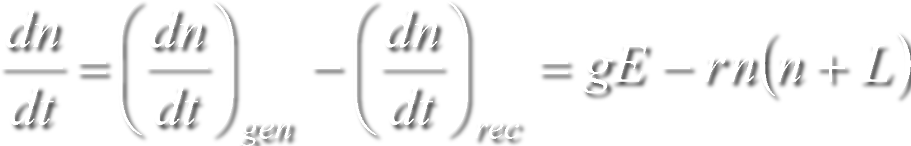

Для изучения вольт-амперной и световой характеристик фоторезистора,
а также для определения его интегральной и удельной интегральной
чувствительности используется установка, схема которой приведена
на рис. 1. Она состоит из фоторезистора Фр, на который падает
световой поток, исходящий от источника света И, а также из миллиамперметра
mА, вольтметра V,
источника напряжения E и реостата R,
предназначенного для регулировки напряжения на фоторезисторе.
Рисунок 1
Изменение величины светового потока, падающего на поверхность фоторезистора,
осуществляется путем изменения расстояния l между
фоторезистором и источником света. В качестве
источника света применяется лампа накаливания, размер спирали
которой мал по сравнению с расстоянием от лампы до фоторезистора. Условно принимая
лампу накаливания точечным изотропным источником света, силу света лампы
Ic можно рассчитать по формуле 1.
Учитывая, что световой поток падает перпендикулярно поверхности фоторезистора, освещенность
Ec можно определить по формуле 2.
Формула 1
Формула 2
При отсутствии освещения в измерительной цепи протекает
темновой ток I0.
При освещении фоторезистора сила тока
возрастает на величину ΔI, называемую фототоком, в результате чего в цепи
устанавливается световой ток I. Отсюда следует, что величина фототока может
быть рассчитана как разность между световым и темновым токами:
ΔI = I - I0
Вольт-амперной
характеристикой фоторезистора называется
зависимость темнового, светового и фототока
от приложенного к фоторезистору напряжения при
неизменной величине светового потока, падающего на
фоторезистор. Для фоторезисторов эта зависимость
практически линейна. Закон Ома нарушается в
большинстве случаев только при высоких напряжениях на фоторезисторе.

Световой характеристикой фоторезистора называется
зависимость фототока от светового потока, падающего на фоторезистор при неизменном
напряжении, приложенном к фоторезистору. Полупроводниковые фоторезисторы, как
правило, имеют нелинейную световую характеристику, что связано с особенностями
процессов фотогенерации и рекомбинации носителей заряда в полупроводнике. При
постоянной интенсивности излучения скорость генерации носителей заряда,
определяемая формулой 3, с течением времени не изменяется, тогда как скорость
рекомбинации, определяемая формулой 4, по мере увеличения неравновесной
концентрации носителей заряда возрастает. Поэтому через некоторое время после
включения освещения наступает равновесие между процессами генерации и
рекомбинации носителей заряда. В полупроводнике устанавливается стационарная
неравновесная концентрация электронов ns и
дырок ps, а скорость изменения концентрации
носителей заряда dn/dt в формуле 5 становится равной нулю (формула 6).
Формула 3
Формула 4

Формула 5
Формула 6
где g и r –
коэффициенты пропорциональности, характеризующие процессы генерации
и рекомбинации соответственно; L – концентрация
электронных ловушек. Формула 6 позволяет получить
зависимость стационарной неравновесной концентрации носителей
заряда ns от освещенности
Eс.
Рассмотрим два предельных случая низкой и высокой освещенности
широкозонного полупроводника с собственной
проводимостью. При низкой освещенности концентрация
электронных ловушек L намного превышает
концентрацию носителей заряда ns.
Тогда если пренебречь концентрацией ns
по сравнению с концентрацией L,
то из формулы 6 следует, что стационарная
неравновесная концентрация носителей пропорциональна освещенности (формула 7).
Формула 7
Формула 8
При высокой освещенности концентрация электронных
ловушек L мала по сравнению с концентрацией носителей
заряда ns, и в формуле 7 концентрацией
L можно пренебречь. Тогда из формулы 7
получится, что стационарная неравновесная
концентрация носителей заряда пропорциональна корню квадратному
от освещенности (формула 8).
Так как сила тока пропорциональна концентрации носителей
заряда, то из формул 7 и 8 следует, что при
низкой освещенности световая характеристика фоторезистора
является линейной, тогда как при высокой освещенности она
станет нелинейной, причем фототок будет пропорционален корню квадратному
из освещенности. При промежуточных освещенностях световая
характеристика будет удовлетворять приближённо формуле 9.
Формула 9
Формула 10
где k – коэффициент пропорциональности; γ – показатель
степени, принимающий значения в пределах от 0,5
(высокая освещенность) до 1,0 (низкая освещенность).
Если прологарифмировать формулу 9, получим формулу 10.
Таким образом, световая характеристика
фоторезистора, построенная в логарифмических
координатах lnΔI – lnEc, является линейной, причем
тангенс угла наклона этой зависимости равен γ.
Наряду с вольт-амперной, световой и спектральной
характеристиками у фоторезисторов есть целый ряд
параметров, наиважнейшими из которых являются
интегральная и удельная интегральная чувствительность.
Интегральной чувствительностью фоторезистора
называется отношение фототока ΔI, который проходит
через фоторезистор при рабочем напряжении, к падающему
на светочувствительную поверхность световому потоку Фс, формула 11.
Формула 11
где S – площадь светочувствительной поверхности
фоторезистора. Удельной интегральной чувствительностью
фоторезистора называется отношение фототока ΔI к величине
светового потока Фс и к величине приложенного напряжения U, формула 12.

Формула 12